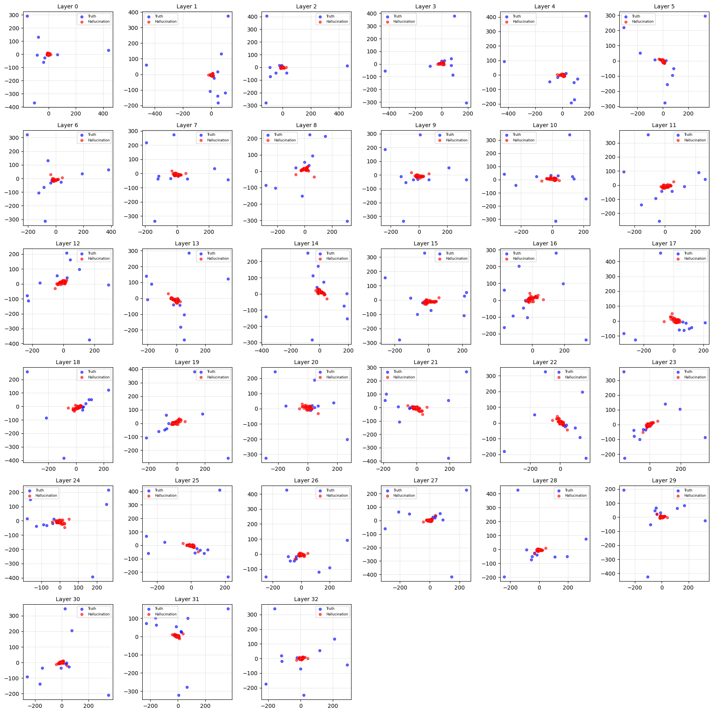

Large Language Models (LLMs) have fundamentally transformed natural language processing, yet factual hallucinations remain one of the most persistent obstacles to their reliable deployment. The industry has largely focused on external mitigation strategies: Retrieval-Augmented Generation (RAG): Grounding model responses by supplying external factual context at inference time. Prompt Engineering: Constraining model behavior through carefully crafted instructions. While these approaches have proven partially effective, they treat hallucination as a symptomatic output error patching the surface without interrogating the underlying mechanism that produces it. Our Approach: Internal Probing A growing body of research has begun looking inward, using linear probes to examine how information is stored and processed across transformer layers. This has established that certain layers are disproportionately associated with false information generation, yet a fundamental question remains open: Why do hallucination states take the geometric shape they do inside the transformer? How We Differ The field has converged on two dominant internal approaches. The first is statistical probing - training linear classifiers on hidden states to predict whether a response is hallucinated. The second is mechanistic attribution - using attention analysis or residual stream decomposition to identify which components contribute to hallucination. Prior work identifies hidden state vectors regardless of whether they are hallucinated or truthful; they trace out a distinctive horn-like shape in the representation space. However, no study offers a mechanistic account of why this structure exists. Our experiments further reveal hallucination states cluster toward the center while truthful states are peripherally localized - a finding that prior work has not identified or investigated. Unlike previous studies that use statistical and matrix properties to justify the existence of hallucinations, we focus on why this geometric pattern emerges, pursuing a first-principles explanation by analyzing hidden states, attention outputs, and MLP outputs at each transformer layer. This positions our work across two distinct contributions: From detection to explanation:We ask why internal states produce the pattern they do. From observation to mechanism: The horn-like geometry has been observed but never causally grounded. We investigate it through the computational primitives of the transformer: hidden states, attention outputs, and MLP outputs to identify the clustering structure.
Observed Pattern
Below are the PCA visualizations of hidden state vectors extracted during response generation across two model architectures. In both cases, hallucinated response states (shown in one cluster) concentrate toward the center of the representation space, while truthful response states are peripherally localized — a pattern that holds consistently and is absent from prompt token states.

Figure 1. Hidden state geometry on Qwen 2.5-1.5B / Qwen3-1.7B.

Figure 2. Hidden state geometry on Mistral-7B-Instruct-v0.2.
References
- Amos Azaria and Tom Mitchell. The internal state of an LLM knows when it's lying. EMNLP 2023 Findings.
- Gao et al. H-Neurons: On the existence, impact, and origin of hallucination-associated neurons in LLMs. 2025.
- Chen et al. INSIDE: LLMs' internal states retain the power of hallucination detection. ICLR 2024.
- Mao et al. Visualizing and benchmarking LLM factual hallucination tendencies via internal state analysis and clustering. FalseCite benchmark. 2026.
- Skean et al. Layer by layer: Uncovering where LLM representations transform meaning. 2025.